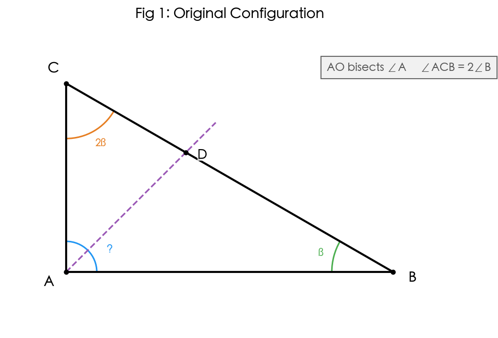
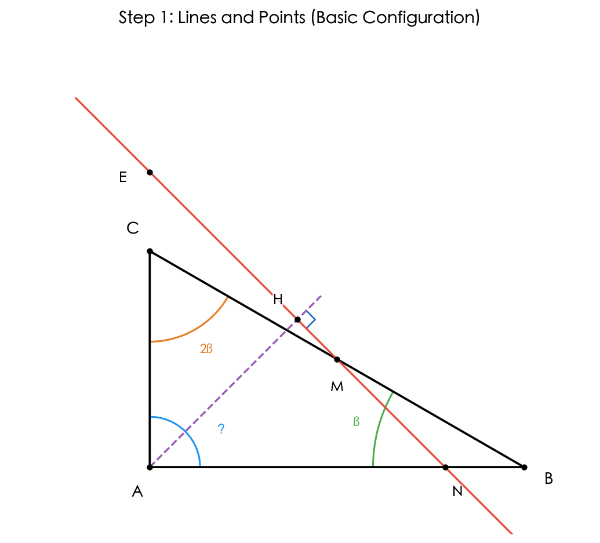
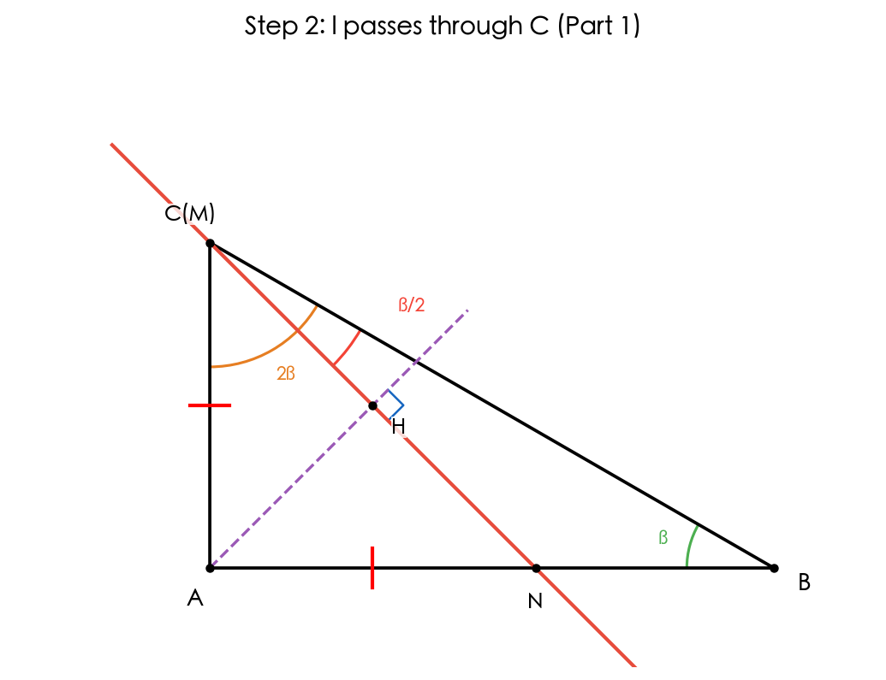
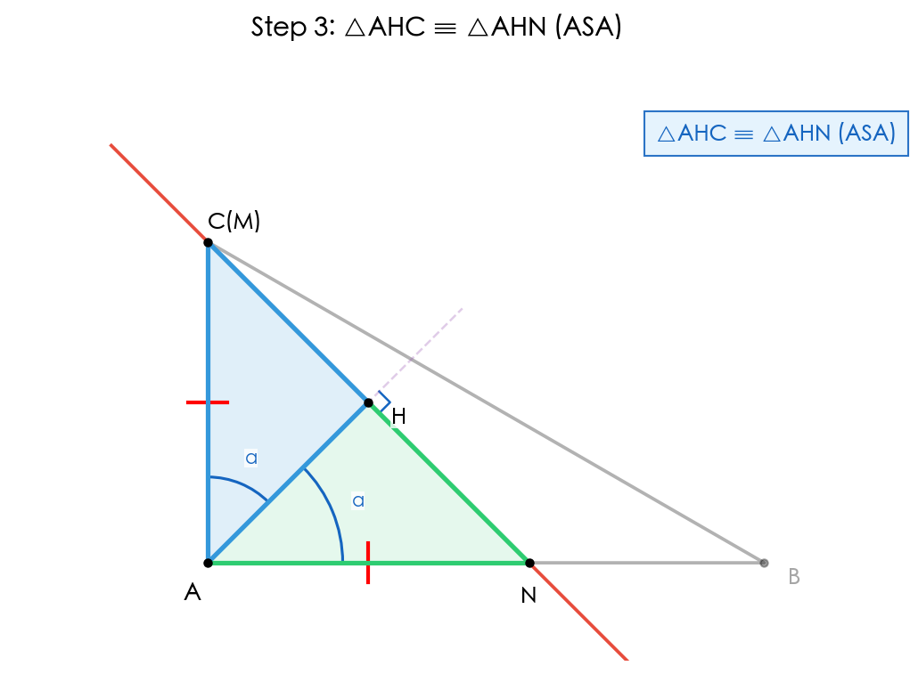
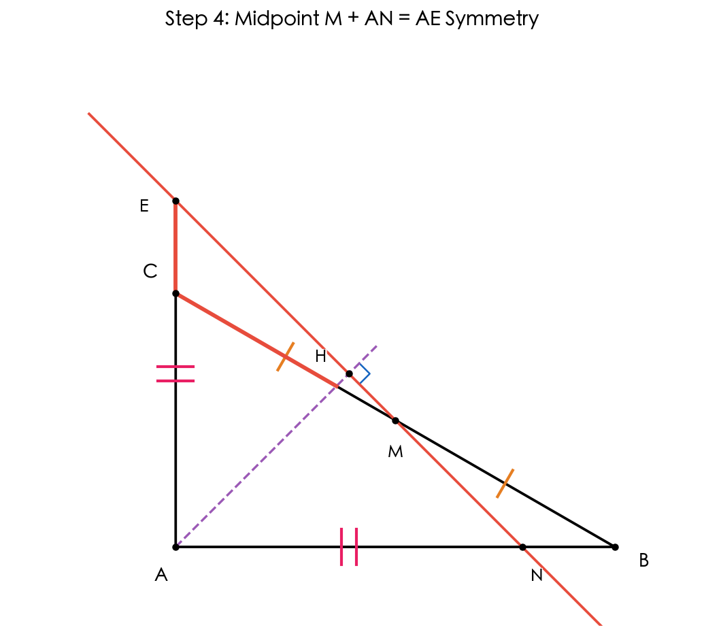
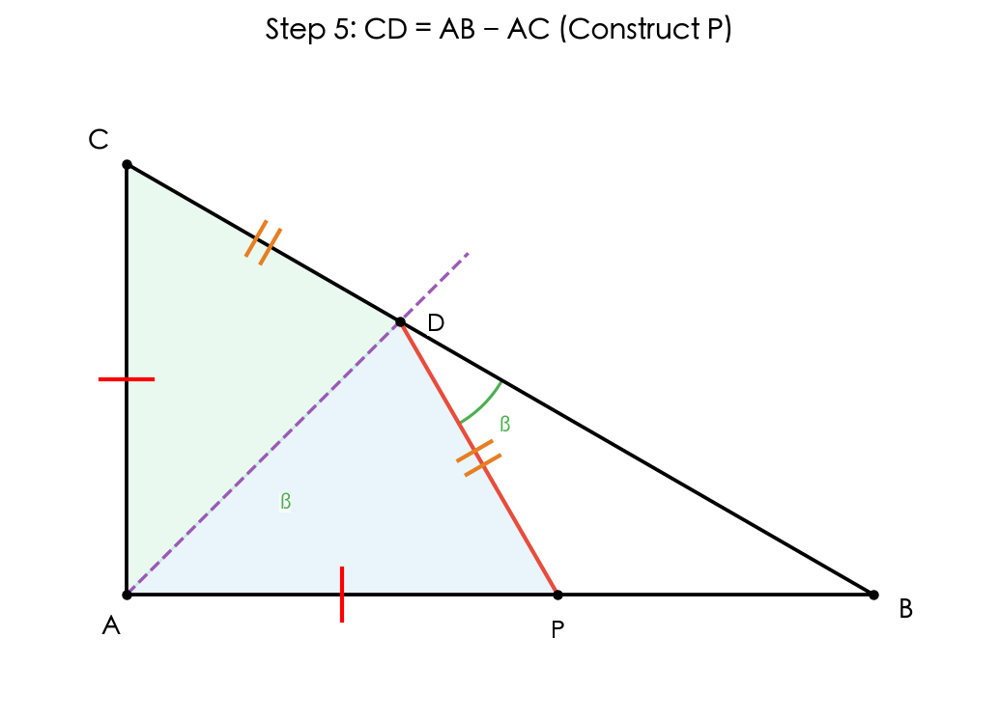
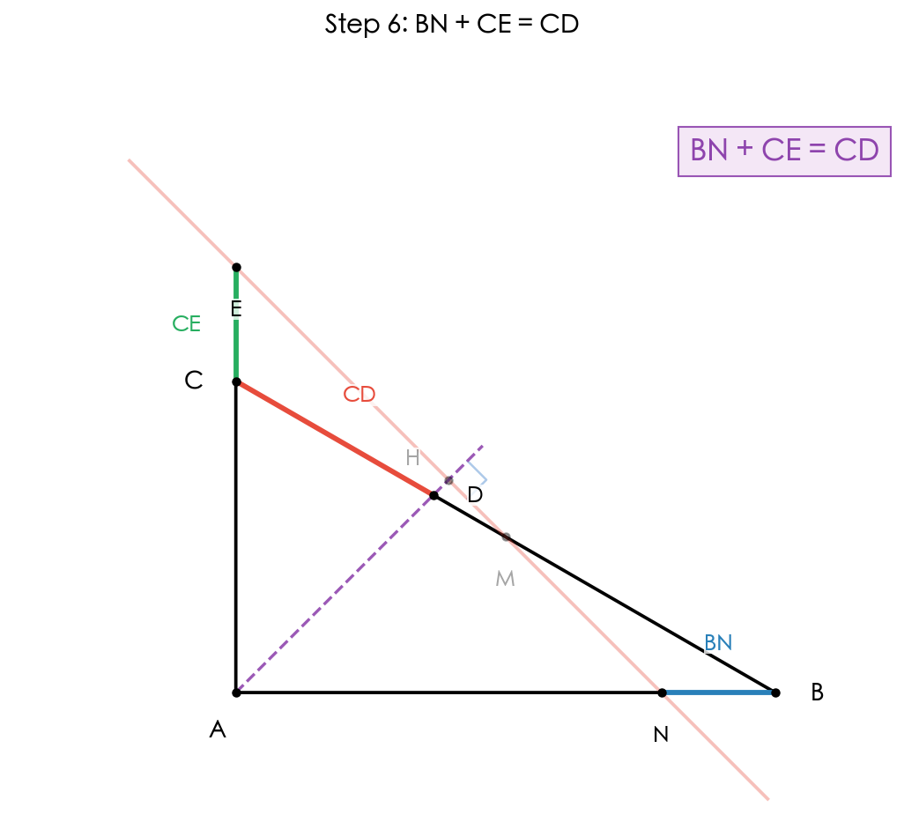

Problem
在三角形ABC中，角ACB = 2 * 角B。射线AO平分角BAC，交BC于D。H是AO上一点。过H作直线l垂直于AO，分别交直线AB、AC、BC于N、E、M。
(1) 当直线l经过点C时（如图2），求证：角B = 2 * 角NMB。
(2) 当M是BC中点时，写出CE和CD之间的等量关系，并证明。
(3) 请直接写出BN、CE、CD之间的等量关系。

Basic Configuration & Angle Analysis

设角B = beta。已知角ACB = 2 * 角B = 2beta。在三角形ABC中：角BAC = 180 - beta - 2beta = 180 - 3beta。AO平分角BAC，所以角BAO = 角CAO = (180 - 3beta)/2 = 90 - (3/2)beta。直线l垂直于AO于H。
Think about it
Part (1): Congruent Triangles when l passes through C

When l passes through C, C lies on l and also on BC, so M = C. Thus angle NMB = angle NCB.
Proof: triangle AHC is congruent to triangle AHN (ASA). Reason: AH is common; angle AHC = angle AHN = 90 (l perpendicular to AO); angle CAH = angle NAH (AO bisects angle A). Therefore AN = AC and angle ACH = angle ANH.

In triangle ACN: AN = AC (isosceles). Angle CAN = 180 - 3beta. By interior sum: 2 * angle ACN + (180 - 3beta) = 180, so angle ACN = (3/2)beta. Then: angle NCB = angle ACB - angle ACN = 2beta - (3/2)beta = beta/2. Since M = C: angle NMB = angle NCB = beta/2. Therefore angle B = 2 * angle NMB. QED.
Think about it
Part (2): Setup - Proving AN = AE

When M is the midpoint of BC: BM = CM. First, we prove a general fact: for ANY position of H on AO (with l perpendicular to AO), AN = AE.
Proof: In triangles AHN and AHE: AH = AH (common); angle AHN = angle AHE = 90 (l perpendicular to AO); angle HAN = angle HAE (AO bisects angle A). So triangle AHN is congruent to triangle AHE (ASA), giving AN = AE. This means N and E are symmetric about AO.
Think about it
Part (2): Proving AN = (AB + AC)/2 when M is midpoint
Draw perpendiculars from B, M, C to AO, with feet at B', H, C'. Since BB' is parallel to l is parallel to CC' (all perpendicular to AO) and M is the midpoint of BC, H is the midpoint of B'C'.
Triangle ABB' is similar to triangle AHN: they share angle at A and both have a right angle. So AB'/AB = AH/AN. Similarly, triangle ACC' is similar to triangle AHE: AC'/AC = AH/AE = AH/AN. Hence AB' = AB * AH/AN and AC' = AC * AH/AN.
Since H is the midpoint of B'C': AH = (AB' + AC')/2 = (AB + AC) * AH / (2 * AN). Cancel AH (AH > 0): 1 = (AB + AC) / (2 * AN). Therefore AN = AE = (AB + AC)/2. This is the key formula for the midpoint case!
Think about it
Part (2): Proving CD = AB - AC

Construct P on AB such that AP = AC. In triangles APD and ACD: AP = AC (construction); angle PAD = angle CAD (AO bisects angle A); AD = AD (common). So triangle APD is congruent to triangle ACD (SAS). Hence PD = CD and angle APD = angle ACD = 2beta.
In triangle BPD: angle PBD = angle ABC = beta. Angle BPD = 180 - angle APD = 180 - 2beta. By interior sum: angle BDP = 180 - beta - (180 - 2beta) = beta. Since angle BDP = angle PBD = beta, triangle BPD is isosceles: BP = PD = CD.
Since P is on AB with AP = AC: BP = AB - AP = AB - AC. Therefore CD = AB - AC. This beautiful result uses only SAS congruence and isosceles triangle reasoning!
Think about it
Part (2): Conclusion - CD = 2CE
From Step 4: CE = AN - AC = (AB + AC)/2 - AC = (AB - AC)/2.
From Step 5: CD = AB - AC.
Therefore: CD = 2 * (AB - AC)/2 = 2 * CE
CD = 2CE
Think about it
Part (3): Relationship among BN, CE, CD

For valid configurations where M lies on segment BC: BN = AB - AN and CE = AN - AC (since AN is between AC and AB).
BN + CE = (AB - AN) + (AN - AC) = AB - AC = CD.
BN + CE = CD
This is a remarkably clean result! The sum of BN and CE always equals CD, regardless of H's position (as long as M is on BC). In the special case where M is the midpoint, BN = CE = CD/2.
Think about it
Summary
Final Answers
(1) angle B = 2 * angle NMB
(2) CD = 2CE
(3) BN + CE = CD
Solution Flow
Topics
Key Techniques
- Symmetry about angle bisector: l perpendicular to AO gives AN = AE via ASA.
- Construct AP = AC: a classic trick to leverage the angle bisector, yielding CD = AB - AC.
- Projection method: perpendiculars to AO convert Midpoint M into midpoint H of B'C'.
- Segment addition: BN + CE simplifies to (AB - AN) + (AN - AC) = AB - AC, which is CD.